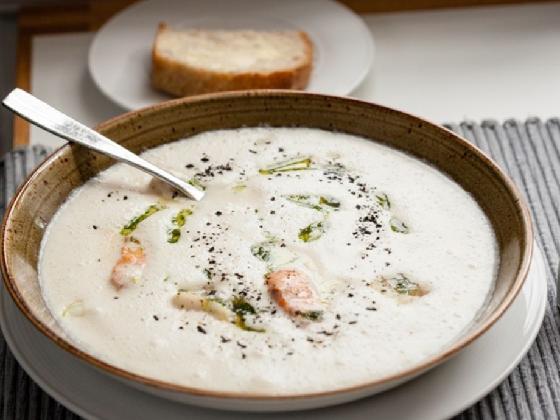

Fish Soup
Return to Front Page

Description
Nothing beats a good bowl of soup before a raid!
Ingredients
- One cup=1 ½ dl or about 90 g flour.
- ½ kg of trout, salmon, cod or another fish
- 10-12 cups of water
- Salt
- One cup of whipped cream
- 3-5 cups of edible herbs of your choosing
Recipe Instructions
- Clean the fish, wash and cut into small pieces.
- Cook slices of fish until tender for 20-30 min.
- Put the cooked fish slices on a dish and bone them.
- Put fish back into soup
- Add whipped cream and chopped herbs
- Cook soup for about 20-30-min and its ready to be served